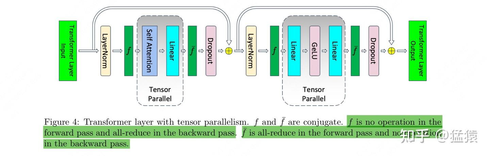
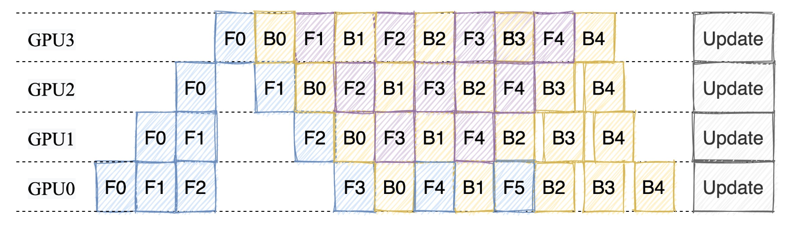
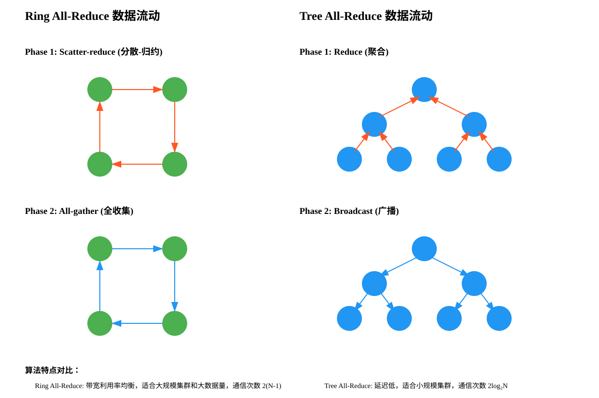
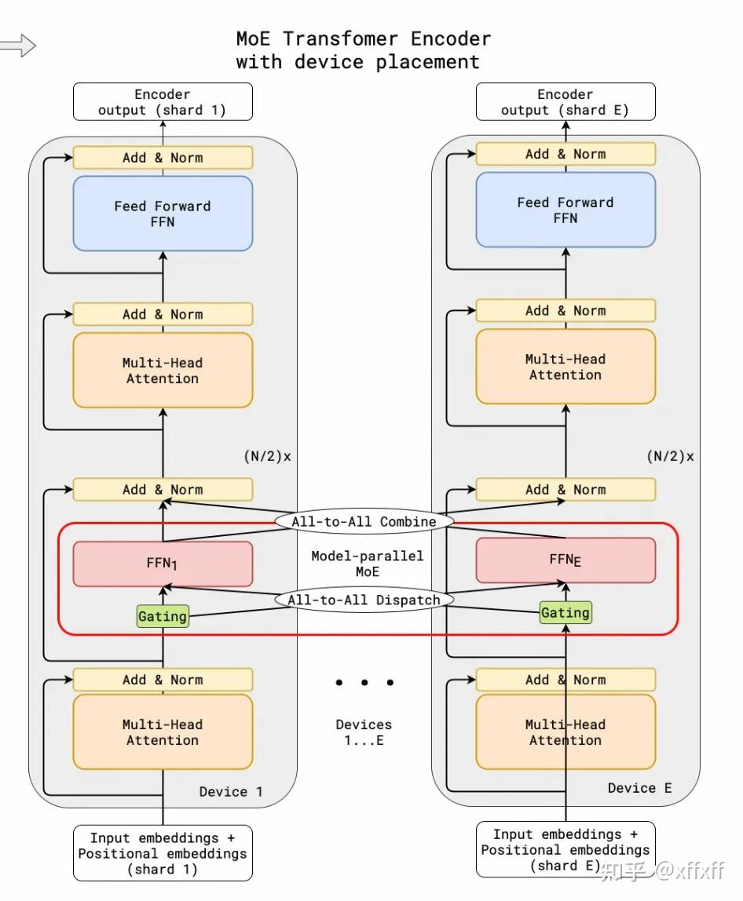

Distributed Training & Communication Primitives
随着模型规模的指数增长 (GPT-3: 175B, PaLM: 540B, Llama 3: 405B), 单张 GPU 已经无法容纳整个模型的参数、梯度和优化器状态。分布式训练通过将计算和存储分摊到多个设备上, 使得训练超大模型成为可能。
三种基本并行策略可以组合使用 (称为 3D Parallelism):
| 策略 | 切分对象 | 通信模式 | 适用场景 |
|---|---|---|---|
| Data Parallelism (DP) | 数据 (batch) | AllReduce 梯度 | 模型能放入单卡 |
| Tensor Parallelism (TP) | 单层参数 | AllReduce / AllGather | 单层参数过大 |
| Pipeline Parallelism (PP) | 层间切分 | 点对点 Send/Recv | 模型层数多 |
核心思想: 每个 GPU 持有模型的完整副本, 将一个 mini-batch 均分为若干 micro-batch, 各 GPU 独立做前向和反向, 然后通过 AllReduce 同步梯度。
DistributedDataParallel 开箱即用核心思想: 将单个层的权重矩阵切分到多个 GPU 上, 每个 GPU 只计算部分结果, 通过通信合并。Megatron-LM 首次系统性地提出了这种方法。
在 Transformer 的 MLP 中, 将第一个线性层做列切分, 第二个线性层做行切分, 这样 forward 只需一次 AllReduce, backward 也只需一次 AllReduce:

核心思想: 将模型按层切分成若干 stage, 每个 stage 放在不同的 GPU 上。数据以 micro-batch 的形式在各 stage 之间流动。
Pipeline parallelism 的核心问题是 pipeline bubble —— GPU 空闲等待的时间。
其中 p = pipeline stages 数, m = micro-batches 数。增加 micro-batch 数可以降低 bubble ratio。

实际训练超大模型时, 通常同时使用 DP + TP + PP 三种策略。例如 Megatron-Turing NLG (530B) 使用:
当序列长度很长时 (如 128K+ tokens), 即使单层的 activation 也可能撑爆显存。序列并行将序列维度切分到多个 GPU 上。
# 前向: TP 区域结束 → SP 区域开始
# 原本: AllReduce(output) [通信量 2M]
# 改为: ReduceScatter(output) [通信量 M]
output = reduce_scatter(tp_output, dim=1) # seq 维度切分
# LayerNorm / Dropout 只在 local seq chunk 上计算
output = layer_norm(output) # shape: [batch, seq_len/tp, hidden]
output = dropout(output)
# SP 区域结束 → 进入下一个 TP 区域
output = all_gather(output, dim=1) # 恢复完整序列 [通信量 M]
# 总通信量 = M + M = 2M, 与 AllReduce 相同!Mixture of Experts (MoE) 模型中, 不同 expert 分布在不同 GPU 上。每个 token 经由 router 选择 top-k expert 处理。
# DeepSeek-V3: 256 Experts, top-8 routing, EP=64
# 每张 GPU 存放 256/64 = 4 个 expert
# Step 1: Router 决定每个 token 去哪些 expert
router_logits = router(hidden_states) # [B*S, num_experts]
topk_ids, topk_weights = top_k(router_logits, k=8)
# Step 2: All-to-All dispatch — 把 token 发送到对应 expert 所在 GPU
# 每张 GPU: 发出本地 token 中属于远端 expert 的部分
# 接收其他 GPU 发来的属于本地 expert 的 token
dispatched = all_to_all(tokens_by_expert, group=ep_group)
# Step 3: 本地 expert 计算
expert_output = local_experts(dispatched) # 只算本 GPU 上的 expert
# Step 4: All-to-All combine — 把结果发回原 GPU
combined = all_to_all(expert_output, group=ep_group)
# Step 5: 加权求和
output = weighted_sum(combined, topk_weights) # [B*S, hidden]NVIDIA Collective Communications Library (NCCL) 提供了分布式训练所需的底层通信操作。理解这些原语是理解分布式训练的基础。
| 操作 | 描述 | 输入 → 输出 | 通信量 (N GPUs, M bytes) |
|---|---|---|---|
Broadcast | 一个 GPU 的数据发送到所有 GPU | 1 份 → N 份相同 | M × (N-1)/N |
Reduce | 所有 GPU 的数据规约到一个 GPU | N 份 → 1 份聚合 | M × (N-1)/N |
AllReduce | 所有 GPU 的数据规约, 结果发到所有 GPU | N 份 → N 份相同聚合 | 2M × (N-1)/N |
AllGather | 收集所有 GPU 的数据到所有 GPU | N × (M/N) → N × M | M × (N-1)/N |
ReduceScatter | 规约后将结果分片发到各 GPU | N × M → N × (M/N) | M × (N-1)/N |
选择不同原语，观察 4 个 GPU 之间数据如何流动。每个 GPU 初始持有不同颜色的数据块。
下图展示了 4 个 GPU、参数量 1GB 时各原语的通信量:
* AllReduce 通信量 = 2M(N-1)/N; 其他 = M(N-1)/N。N=4, M=1GB。
Ring AllReduce 是最经典的 AllReduce 实现之一, 由百度在 2017 年引入深度学习训练中。其核心优势是通信量与 GPU 数量无关 (per-GPU 带宽利用恒定)。
Ring AllReduce 分为两个阶段, 每个阶段有 N-1 步 (N = GPU 数):
每个 GPU 的梯度向量 [g₀, g₁, g₂, g₃] 被切成 4 个 chunk。我们用具体数值展示每一步每个 GPU 每个 chunk 的内容变化。
# Ring AllReduce 实现 (ReduceScatter + AllGather)
def ring_allreduce(data, rank, world_size):
# 将数据分为 world_size 个 chunk
chunks = split(data, world_size)
# Phase 1: Reduce-Scatter
for step in range(world_size - 1):
send_idx = (rank - step) % world_size
recv_idx = (rank - step - 1) % world_size
# 向下一个 GPU 发送, 从上一个 GPU 接收
send(chunks[send_idx], dst=(rank + 1) % world_size)
recv_buf = recv(src=(rank - 1) % world_size)
# 将接收到的数据累加到对应 chunk
chunks[recv_idx] += recv_buf
# 此时 chunks[(rank+1) % world_size] 包含该 chunk 的全局归约结果
# Phase 2: AllGather
for step in range(world_size - 1):
send_idx = (rank - step + 1) % world_size
recv_idx = (rank - step) % world_size
send(chunks[send_idx], dst=(rank + 1) % world_size)
chunks[recv_idx] = recv(src=(rank - 1) % world_size)
return concat(chunks)M/N(N-1) × M/N
M/N(N-1) × M/N
2(N-1)/N ≈ 2, 所以每 GPU 通信量趋近于 2M。| 方法 | 每 GPU 发送量 | N=4 | N=64 | N=1024 |
|---|---|---|---|---|
| Naive (one-to-all) | (N-1) × M |
3M | 63M | 1023M |
| Ring AllReduce | 2(N-1)/N × M |
1.5M | 1.97M | 1.998M |
(N-1)/N ≈ 100%。而 Naive 方法中, 大部分时间只有根节点在通信, 其他 GPU 空闲。

微软的 ZeRO (Zero Redundancy Optimizer) 和 PyTorch 的 FSDP 通过分片 (sharding) 优化器状态、梯度和参数来突破数据并行的内存限制。
对于参数量为 Φ 的模型, 使用 Adam + Mixed Precision 训练时, 每个 GPU 的内存占用:
| 组件 | 精度 | 内存 (bytes) |
|---|---|---|
| 参数 (FP16) | FP16 | 2Φ |
| 梯度 (FP16) | FP16 | 2Φ |
| 参数 master copy (FP32) | FP32 | 4Φ |
| Adam momentum (FP32) | FP32 | 4Φ |
| Adam variance (FP32) | FP32 | 4Φ |
| 总计 | 16Φ |
# FSDP Forward Pass 伪代码
for layer in model.layers:
# 1. AllGather: 从所有 GPU 收集完整参数
full_params = all_gather(layer.sharded_params)
# 2. Compute: 用完整参数做前向计算
output = layer.forward(input, full_params)
# 3. Free: 释放非本 shard 的参数, 节省内存
free(full_params except my_shard)
# FSDP Backward Pass
for layer in reversed(model.layers):
# 1. AllGather: 重新收集参数 (用于计算梯度)
full_params = all_gather(layer.sharded_params)
# 2. Compute: 计算梯度
grad = layer.backward(output_grad, full_params)
# 3. ReduceScatter: 梯度规约并分片
sharded_grad = reduce_scatter(grad)
# 4. Free: 释放完整参数
free(full_params except my_shard)import torch
import torch.distributed as dist
import os
def setup(rank, world_size):
"""初始化分布式训练环境"""
os.environ['MASTER_ADDR'] = 'localhost'
os.environ['MASTER_PORT'] = '12355'
# 初始化进程组, 选择通信后端
# 'nccl' 用于 GPU, 'gloo' 用于 CPU
dist.init_process_group(
backend='nccl',
rank=rank,
world_size=world_size
)
# 设置当前进程使用的 GPU
torch.cuda.set_device(rank)
def cleanup():
dist.destroy_process_group()def allreduce_example(rank, world_size):
setup(rank, world_size)
# 每个 GPU 创建自己的 tensor
tensor = torch.tensor([rank + 1.0], device=f'cuda:{rank}')
print(f"Rank {rank} before AllReduce: {tensor}")
# AllReduce: 对所有 GPU 的 tensor 求和
dist.all_reduce(tensor, op=dist.ReduceOp.SUM)
print(f"Rank {rank} after AllReduce: {tensor}")
# 所有 GPU 输出: tensor([10.0]) (1+2+3+4=10, 假设 4 GPUs)
cleanup()
# 启动
import torch.multiprocessing as mp
mp.spawn(allreduce_example, args=(world_size,), nprocs=world_size)def allgather_example(rank, world_size):
setup(rank, world_size)
# 每个 GPU 的本地数据
local_tensor = torch.tensor([rank * 10, rank * 10 + 1],
device=f'cuda:{rank}')
# 准备接收 buffer (world_size 个 tensor)
gathered = [torch.zeros(2, device=f'cuda:{rank}')
for _ in range(world_size)]
# AllGather: 收集所有 GPU 的数据
dist.all_gather(gathered, local_tensor)
print(f"Rank {rank}: gathered = {gathered}")
# 每个 GPU 都有: [[0,1], [10,11], [20,21], [30,31]]
cleanup()def reduce_scatter_example(rank, world_size):
setup(rank, world_size)
# 每个 GPU 有 world_size 个 chunk
input_tensor = torch.ones(world_size, device=f'cuda:{rank}') * (rank + 1)
output_tensor = torch.zeros(1, device=f'cuda:{rank}')
# ReduceScatter: 规约后分片
dist.reduce_scatter_tensor(output_tensor, input_tensor,
op=dist.ReduceOp.SUM)
print(f"Rank {rank}: result = {output_tensor}")
# Rank 0: 10.0, Rank 1: 10.0, ... (sum of all ranks' chunk_i)
cleanup()def point_to_point(rank, world_size):
setup(rank, world_size)
tensor = torch.zeros(1, device=f'cuda:{rank}')
if rank == 0:
# Rank 0 发送数据到 Rank 1
tensor += 42
dist.send(tensor, dst=1)
print(f"Rank 0 sent: {tensor}")
elif rank == 1:
# Rank 1 从 Rank 0 接收数据
dist.recv(tensor, src=0)
print(f"Rank 1 received: {tensor}")
cleanup()不同并行策略的通信模式和开销差异巨大。下表对比了在不同配置下每次迭代的通信量:
| 策略 | 通信原语 | 每次迭代通信量 (per GPU) | 通信频率 |
|---|---|---|---|
| DDP | AllReduce | 2M(N-1)/N | 每个 backward step |
| FSDP (ZeRO-3) | AllGather + ReduceScatter | 3M(N-1)/N | 每层 forward + backward |
| Tensor Parallel | AllReduce | 2 × activation_size × (N-1)/N per layer | 每层 forward + backward |
| Pipeline Parallel | P2P Send/Recv | activation_size × micro_batches | 每个 micro-batch |

CUDA Stream 是 GPU 上的一个有序命令队列。你可以把它想象成一条流水线传送带：
stream 0 (default stream) 上, 因此默认是串行的# PyTorch 中使用多 stream
s1 = torch.cuda.Stream()
s2 = torch.cuda.Stream()
# Stream 1: 计算
with torch.cuda.stream(s1):
output = model(input_batch)
# Stream 2: 同时做通信 (与 s1 并行!)
with torch.cuda.stream(s2):
dist.all_reduce(gradients)
# 需要同步时: 插入 event 依赖
event = s2.record_event()
s1.wait_event(event) # s1 等 s2 的 all_reduce 完成分布式训练的性能瓶颈往往不是通信本身, 而是 通信阻塞了计算。核心思想: 让 GPU 在等待数据传输时继续做有用的计算, 从而 "隐藏" 通信延迟。
有了多 CUDA Stream 的概念, 答案就很自然了: 把通信和计算放到不同的 stream 上, 硬件就能并行执行。
DDP 不会每算完一个梯度就立刻通信, 而是将多个梯度打包成 "bucket" (默认 25MB), 从最后一层开始:
FSDP 在计算当前层时, 提前 AllGather 下一层的参数。Forward 和 Backward 都有 prefetch:
底层 API 可以手动实现 overlap:
# 启动异步通信 (不阻塞)
handle = dist.all_reduce(gradient_bucket, async_op=True)
# GPU 继续做其他计算...
next_layer_grad = compute_backward(next_layer)
# 需要结果时才等待
handle.wait() # 此时通信可能早已完成通信时间 / 计算时间 ≤ 1 时, overlap 几乎能完全隐藏通信开销。实际调优时用 torch.profiler 的 trace view 观察两条 stream 是否真正并行。
假设有 N 个 GPU, 每个 GPU 上的梯度大小为 M bytes。请推导 Ring AllReduce 算法中每个 GPU 的总发送量和总接收量。
具体问题: 当 N=8, M=2GB (一个 500M 参数模型的 FP32 梯度) 时, 每个 GPU 发送和接收多少数据?
Ring AllReduce 分两个阶段, 每个阶段有 N-1 步。每步每个 GPU 发送 M/N 大小的数据。
推导:
1. 数据被分为 N 个 chunk, 每个 chunk 大小 = M/N
2. Reduce-Scatter 阶段: N-1 步, 每步发送 M/N bytes
3. AllGather 阶段: N-1 步, 每步发送 M/N bytes
4. 总发送量 = 2(N-1) × M/N = 2M(N-1)/N
5. 总接收量同样 = 2M(N-1)/N
代入数值: N=8, M=2GB
每 GPU 通信量 = 2 × 2GB × 7/8 = 3.5 GB
注意: 相比 Naive AllReduce (每个 GPU 发送到一个 root 再广播) 的 2M(N-1) = 14 GB, Ring 方式大幅降低了单 GPU 的带宽需求。
你需要训练一个 70B 参数的模型, 拥有 64 张 A100 80GB GPU (8 节点, 每节点 8 卡, NVLink 互联)。
已知条件:
问题: 设计 DP/TP/PP 的组合, 说明每种并行度的选择理由。
考虑: (1) TP 需要高带宽, 应放在节点内; (2) 先确保模型能放入, 再考虑扩展; (3) PP 的通信量最小, 适合跨节点。
推荐方案: TP=8, PP=2, DP=4
验证: 8 × 2 × 4 = 64 GPU ✓
设计理由:
1. TP=8 (节点内):
2. PP=2 (跨节点):
3. DP=4:
替代方案: 如果使用 FSDP Stage 3 代替 TP+DP, 则可以 PP=8, FSDP=8, 但通信开销会更大。
| 组件 | 精度 | 计算 | 显存 |
|---|---|---|---|
| 模型参数 (FP16) | FP16 | 4.375B × 2 bytes | 8.75 GB |
| 梯度 (FP16) | FP16 | 4.375B × 2 bytes | 8.75 GB |
| 参数 Master Copy (FP32) | FP32 | 4.375B × 4 bytes | 17.5 GB |
| Adam Momentum (FP32) | FP32 | 4.375B × 4 bytes | 17.5 GB |
| Adam Variance (FP32) | FP32 | 4.375B × 4 bytes | 17.5 GB |
| Activations (+ checkpointing) | Mixed | b=1, s=2048, full ckpt | ~1.3 GB |
| 总计 (with full activation checkpointing) | ~71.3 GB | ||
| 保存的 Activation | Shape | 大小 (bytes) | 用途 (backward) |
|---|---|---|---|
| LayerNorm 1 输入 | [b, s, h] | 2bsh | 计算 LayerNorm 梯度 |
| QKV 输出 | [b, s, 3h] | 6bsh | Attention backward |
| Attention score (softmax 输出) | [b, n_head, s, s] | 2bs²n | Attention backward (V 的梯度) |
| Attention output (O proj 输入) | [b, s, h] | 2bsh | O projection backward |
| LayerNorm 2 输入 (residual) | [b, s, h] | 2bsh | 计算 LayerNorm 梯度 |
| FFN 中间层 (GeLU 输入) | [b, s, 4h] | 8bsh | GeLU backward (非线性) |
| FFN 输出 (down proj 输入) | [b, s, 4h] | 8bsh | Down projection backward |
| Dropout masks (×2) | [b, s, h] | 2bs·h/8 | 重复 dropout pattern (1 bit/elem) |
| seq_len (s) | 线性增长 + attention score 是 O(s²)。长序列时 attention 项主导! |
| micro_batch (b) | 线性增长。训练大 batch 时可用梯度累积降低单步 b |
| hidden_dim (h) | 线性增长。更大模型 → 更大 h → 更多 activation |
| 层数 (L) | 线性。PP 切层可直接减少本卡负担的层数 |
| TP degree | 部分 activation 被 TP 切分 (QKV output, FFN 中间层), 部分不切 (LayerNorm input) |
| Checkpointing | 用 ~33% 额外计算换取 ~90% activation 内存节省。只保存每层输入, backward 时重算 |
用 torch.distributed 的 isend/irecv 原语从零实现 Ring AllReduce。
要求: 实现 Reduce-Scatter + AllGather, 4 进程验证与 dist.all_reduce 一致。
import torch
import torch.distributed as dist
import torch.multiprocessing as mp
import os
def ring_allreduce(tensor, rank, world_size):
assert tensor.numel() % world_size == 0
chunk_size = tensor.numel() // world_size
chunks = list(tensor.view(world_size, chunk_size).unbind(dim=0))
chunks = [c.contiguous().clone() for c in chunks]
left = (rank - 1) % world_size
right = (rank + 1) % world_size
send_buf = torch.zeros(chunk_size, device=tensor.device)
recv_buf = torch.zeros(chunk_size, device=tensor.device)
# ===== Phase 1: Reduce-Scatter (N-1 steps) =====
for step in range(world_size - 1):
send_idx = ??? # TODO: 哪个 chunk 要发出去?
recv_idx = ??? # TODO: 收到的数据累加到哪个 chunk?
send_buf.copy_(chunks[send_idx])
req_s = dist.isend(send_buf, dst=right)
req_r = dist.irecv(recv_buf, src=left)
req_s.wait()
req_r.wait()
chunks[recv_idx] += recv_buf # 关键: 累加!
# ===== Phase 2: AllGather (N-1 steps) =====
for step in range(world_size - 1):
send_idx = ??? # TODO: 发送已归约的 chunk
recv_idx = ??? # TODO: 覆盖 (不是累加!)
send_buf.copy_(chunks[send_idx])
req_s = dist.isend(send_buf, dst=right)
req_r = dist.irecv(recv_buf, src=left)
req_s.wait()
req_r.wait()
chunks[recv_idx].copy_(recv_buf) # 关键: 覆盖!
return torch.cat(chunks, dim=0)
def worker(rank, world_size):
os.environ['MASTER_ADDR'] = 'localhost'
os.environ['MASTER_PORT'] = '29500'
dist.init_process_group('nccl', rank=rank, world_size=world_size)
torch.cuda.set_device(rank)
torch.manual_seed(rank)
tensor = torch.randn(16, device=f'cuda:{rank}')
result_ring = ring_allreduce(tensor.clone(), rank, world_size)
result_ref = tensor.clone()
dist.all_reduce(result_ref, op=dist.ReduceOp.SUM)
assert torch.allclose(result_ring, result_ref, atol=1e-5)
print(f"Rank {rank}: PASSED!")
dist.destroy_process_group()
if __name__ == '__main__':
mp.spawn(worker, args=(4,), nprocs=4)Reduce-Scatter 的 index 规律:
send_idx = (rank - step) % world_size
recv_idx = (rank - step - 1) % world_size直觉: rank=0 第 0 步发 chunk0, 第 1 步发 chunk3 (已被上一步累加过), ...
AllGather 的 index 规律:
send_idx = (rank - step + 1) % world_size
recv_idx = (rank - step) % world_size直觉: 从自己持有的那个已归约 chunk 开始发, 每步往前推一格
# 完整答案 — 只需填入正确的 index 即可:
# Phase 1: Reduce-Scatter
send_idx = (rank - step) % world_size
recv_idx = (rank - step - 1) % world_size
# Phase 2: AllGather
send_idx = (rank - step + 1) % world_size
recv_idx = (rank - step) % world_size
# 推导过程 (以 4 GPU, Reduce-Scatter 为例):
# Step 0: GPU0 发 chunk0 给 GPU1, GPU1 发 chunk1 给 GPU2, ...
# send_idx = (rank - 0) % 4 = rank → GPU0 发 chunk0 ✓
# Step 1: GPU0 发 chunk3 给 GPU1, ...
# send_idx = (rank - 1) % 4 → GPU0 发 chunk3 ✓
# Step 2: GPU0 发 chunk2 给 GPU1, ...
# send_idx = (rank - 2) % 4 → GPU0 发 chunk2 ✓
#
# recv_idx: 收到的数据要累加到"下一个"要发出去的 chunk
# = send_idx_of_next_step = (rank - step - 1) % N模拟两种调度, 对比 bubble ratio 和峰值 activation 内存。
import numpy as np
def simulate_gpipe(p, m):
"""
p: num pipeline stages, m: num micro-batches
Returns: (schedule, bubble_ratio, peak_memory)
schedule[stage][time] = 'F0'/'B0'/'idle'
"""
total_time = 2 * (m + p - 1)
schedule = [['idle'] * total_time for _ in range(p)]
# TODO: Forward pass
# stage s 处理 micro-batch mb 的时间 = s + mb
for mb in range(m):
for s in range(p):
schedule[s][???] = f'F{mb}'
# TODO: Backward pass
# GPipe: 所有 forward 做完再做 backward
# backward 从最后一个 stage 往前走
b_start = ??? # forward 结束的时间点
for mb in range(m):
for s in range(p - 1, -1, -1):
schedule[s][???] = f'B{mb}'
# Bubble ratio
busy = sum(1 for row in schedule for x in row if x != 'idle')
bubble_ratio = 1.0 - busy / (p * total_time)
# Peak memory: GPipe 在开始 backward 之前, 每个 stage 存了 m 个 activation
peak_memory = m
return schedule, bubble_ratio, peak_memory
def simulate_1f1b(p, m):
"""1F1B schedule: warmup → steady (1B1F) → cooldown"""
assert m >= p
total_time = 2 * (m + p - 1)
schedule = [['idle'] * total_time for _ in range(p)]
for s in range(p):
t = s
fwd_done, bwd_done = 0, 0
# TODO: Warmup — 做 (p - s) 个 forward 填满 pipeline
warmup_count = ???
for _ in range(warmup_count):
schedule[s][t] = f'F{fwd_done}'
fwd_done += 1; t += 1
# TODO: Steady state — 交替 1B + 1F
while fwd_done < m:
schedule[s][t] = f'B{bwd_done}'
bwd_done += 1; t += 1
schedule[s][t] = f'F{fwd_done}'
fwd_done += 1; t += 1
# TODO: Cooldown — 做剩余 backward
while bwd_done < m:
schedule[s][t] = f'B{bwd_done}'
bwd_done += 1; t += 1
busy = sum(1 for row in schedule for x in row if x != 'idle')
bubble_ratio = 1.0 - busy / (p * total_time)
# 1F1B 峰值内存: stage s 最多同时持有 (p - s) 个 activation
peak_memory = p # first stage worst case
return schedule, bubble_ratio, peak_memory
def print_schedule(schedule, title):
print(f"\n{'='*60}\n {title}\n{'='*60}")
for s, row in enumerate(schedule):
cells = [f'{x:4s}' if x != 'idle' else ' . ' for x in row]
print(f" Stage {s}: |{'|'.join(cells)}|")
# === 运行 ===
p, m = 4, 8
_, bg, mg = simulate_gpipe(p, m)
_, b1, m1 = simulate_1f1b(p, m)
print(f"GPipe: bubble={bg:.1%}, peak_mem={mg} activations")
print(f"1F1B: bubble={b1:.1%}, peak_mem={m1} activations")
print(f"Memory saving: {(1-m1/mg)*100:.0f}% (1F1B vs GPipe)")GPipe Forward: stage s 处理 mb 的时间 = s + mb
GPipe Backward: 起始时间 = m + p - 1, stage s 处理 mb 的时间 = b_start + mb + (p-1-s)
1F1B Warmup count: min(p - s, m) — 越靠前的 stage warmup 越长
# GPipe Forward: 每个 stage 依次处理所有 micro-batch
schedule[s][s + mb] = f'F{mb}'
# GPipe Backward:
b_start = m + p - 1
schedule[s][b_start + mb + (p - 1 - s)] = f'B{mb}'
# 1F1B Warmup:
warmup_count = min(p - s, m)
# 预期输出 (p=4, m=8):
# GPipe: bubble=27.3%, peak_mem=8 activations
# 1F1B: bubble=27.3%, peak_mem=4 activations
# Memory saving: 50%
#
# 注意: bubble ratio 相同! 1F1B 的优势在内存, 不在 bubble。
# (实际中 1F1B 允许更大的 m, 从而间接降低 bubble)| 概念 | 核心要点 |
|---|---|
| Data Parallelism | 复制模型, 切分数据, AllReduce 梯度; 简单但有显存瓶颈 |
| Tensor Parallelism | 切分层内权重 (column/row split); 需要高带宽互联 |
| Pipeline Parallelism | 按层切分模型; bubble ratio = (p-1)/(p-1+m) |
| Ring AllReduce | 通信量 O(M), 与 GPU 数无关; 带宽最优 |
| FSDP / ZeRO | 分片优化器/梯度/参数; Stage 3 可线性降低内存 |
| 3D Parallelism | TP (节点内) + PP (跨节点) + DP (扩展); 训练超大模型的标准范式 |